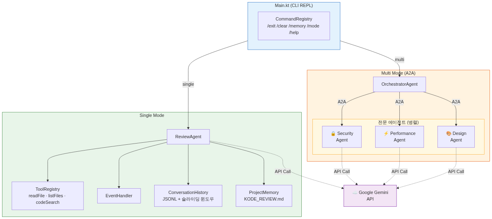
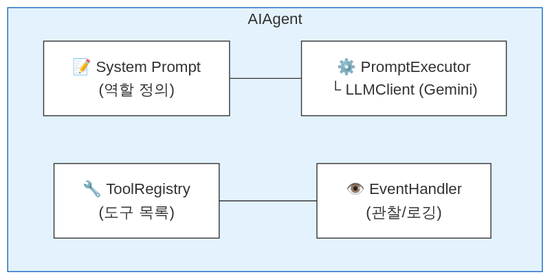
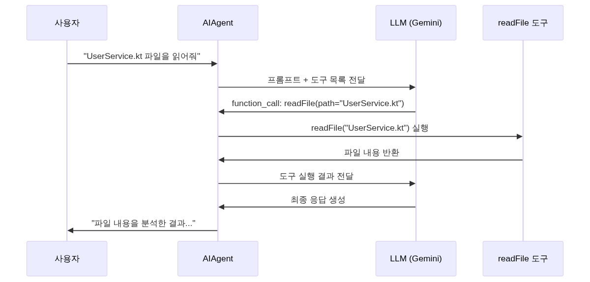
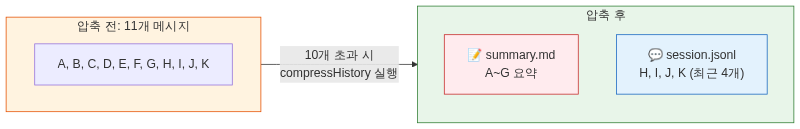
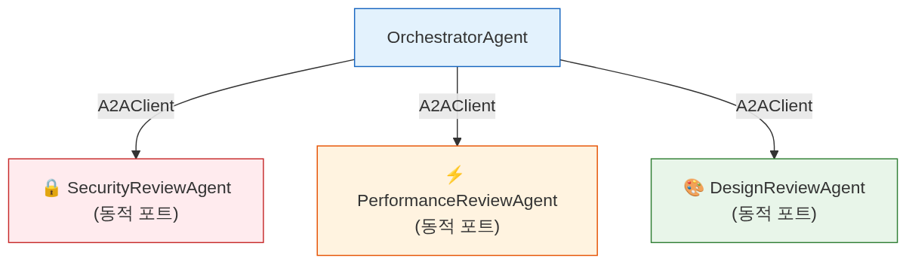

이 코드랩에서는 JetBrains의 Koog 프레임워크를 사용해 실제로 동작하는 AI 코드 리뷰 에이전트를 단계적으로 만들어봅니다.
GoogleLLMClient, MultiLLMPromptExecutor, AIAgent의 구성 방법@Tool, @LLMDescription 어노테이션으로 에이전트가 사용할 함수 만들기EventHandler 피처여러분이 사용하는 ChatGPT나 Gemini 같은 챗봇은 "질문에 답하는" 역할을 합니다. 반면 AI 에이전트는 목표를 받으면 스스로 판단하고, 도구를 사용하고, 여러 단계를 거쳐 작업을 완수합니다.
챗봇 | AI 에이전트 | |
입력 | 질문 | 목표/작업 |
처리 | 1회 응답 | 반복적 추론 + 행동 |
도구 | 없음 | 파일 읽기, 검색, API 호출 등 |
자율성 | 수동적 | 능동적 (스스로 다음 행동 결정) |
이 코드랩에서 만드는 코드 리뷰 에이전트는 "UserService.kt를 리뷰해줘"라는 목표를 받으면:
listFiles로 프로젝트 구조 파악readFile로 파일 내용 읽기이 과정을 자율적으로 수행합니다.
코드랩을 완료하면 다음 기능을 갖춘 Kode Review CLI 에이전트가 완성됩니다.
Koog Code Review Agent - BWAI 2026
===================================
명령어: /help, /clear, /memory add <내용>, /mode single|multi, /exit
[single] You > src/main/kotlin/io/github/bwai/koog/codelab/example/UserService.kt 를 리뷰해줘
[도구 호출] readFile
[도구 완료] readFile
Assistant > ## 코드 리뷰 결과
### 요약
SQL 인젝션 취약점이 발견되었습니다...

시작 전에 다음 항목을 준비하세요.
code_search 도구 사용 시 필요)이 코드랩은 세 가지 진입점을 제공합니다.
브랜치 | 용도 |
| 처음부터 따라 구현 (권장) |
| N 단계부터 중간 시작 |
| 완성된 최종 코드 참조 |
git clone https://github.com/gdgand/2026-koog-codelab.git
cd 2026-koog-codelab
git checkout initial
프로젝트 루트에 local.properties 파일을 생성합니다.
# local.properties
API_KEY=your-api-key-here
./gradlew build
빌드가 성공하면 다음과 같이 출력됩니다.
BUILD SUCCESSFUL in 30s
src/main/kotlin/io/github/bwai/koog/codelab/
├── Main.kt ← 진입점 (직접 구현)
├── agent/
│ ├── ReviewAgent.kt ← 직접 구현
│ ├── OrchestratorAgent.kt ← 직접 구현 (Step 11)
│ └── specialist/
│ ├── SpecialistReviewAgent.kt ← 사전 제공
│ ├── SecurityReviewAgent.kt ← 직접 구현 (Step 11)
│ ├── PerformanceReviewAgent.kt← 직접 구현 (Step 11)
│ └── DesignReviewAgent.kt ← 직접 구현 (Step 11)
├── tools/
│ ├── ReadFileTool.kt ← 직접 구현 (Step 4)
│ ├── ListFileTool.kt ← 사전 제공
│ └── CodeSearchTool.kt ← 사전 제공
├── context/
│ ├── session/
│ │ ├── ConversationHistoryStorage.kt ← 사전 제공
│ │ ├── JsonlEntry.kt ← 사전 제공
│ │ └── JsonlConversationHistoryStorage.kt ← 직접 구현
│ └── memory/
│ ├── AgentMemoryStorage.kt ← 직접 구현 (Step 10)
│ └── KodeReviewMemoryStorage.kt ← 직접 구현 (Step 10)
├── command/ ← 사전 제공 (Command, CommandRegistry 등)
│ └── MemoryCommand.kt ← 직접 구현 (Step 10)
│ └── ModeCommand.kt ← 직접 구현 (Step 11)
├── example/
│ └── UserService.kt ← 리뷰 실습용 예제
└── a2a/ ← 사전 제공 (A2A 인프라)
macOS:
brew install ripgrep
Ubuntu/Debian:
sudo apt-get install ripgrep
Windows:
winget install BurntSushi.ripgrep.MSVC
initial 브랜치의 Main.kt는 TODO 마커만 있는 스켈레톤입니다. 이제 Koog의 핵심 컴포넌트를 직접 연결해봅니다.
클래스 | 역할 |
| Google Gemini API와 통신하는 LLM 클라이언트 |
| LLM에게 프롬프트를 실행하는 실행기 |
| 시스템 프롬프트, 모델, 도구를 조합한 에이전트 |

LLM(Large Language Model)은 텍스트를 이해하고 생성하는 AI 모델입니다. 에이전트는 이 LLM에게 역할(시스템 프롬프트)과 도구를 부여해서, 단순 텍스트 생성을 넘어 실제 작업을 수행할 수 있게 만드는 구조입니다.
지금은 도구 없이 대화만 가능한 기본 에이전트를 만듭니다. Step 4부터 도구를 추가하면 진짜 "에이전트"가 됩니다.
src/main/kotlin/io/github/bwai/koog/codelab/Main.kt를 다음과 같이 작성합니다.
package io.github.bwai.koog.codelab
import ai.koog.agents.core.agent.AIAgent
import ai.koog.prompt.executor.clients.google.GoogleLLMClient
import ai.koog.prompt.executor.clients.google.GoogleModels
import ai.koog.prompt.executor.llms.MultiLLMPromptExecutor
import kotlinx.coroutines.runBlocking
fun main() = runBlocking {
val apiKey = System.getProperty("API_KEY")
?: System.getenv("API_KEY")
?: error("API_KEY가 설정되지 않았습니다. 환경변수 API_KEY 또는 local.properties에 추가하세요.")
val llmClient = GoogleLLMClient(apiKey = apiKey)
val executor = MultiLLMPromptExecutor(llmClient)
println("Koog Code Review Agent - BWAI 2026")
println("===================================")
println("종료하려면 /exit 를 입력하세요.\n")
while (true) {
print("You > ")
val input = readlnOrNull()?.trim() ?: continue
if (input.isEmpty()) continue
if (input == "/exit") break
val agent = AIAgent(
promptExecutor = executor,
llmModel = GoogleModels.Gemini2_5Flash,
systemPrompt = "당신은 도움이 되는 AI 어시스턴트입니다."
)
val response = agent.run(input)
println("\nAssistant > $response\n")
}
println("안녕히 가세요!")
}
./gradlew run
Koog Code Review Agent - BWAI 2026
===================================
종료하려면 /exit 를 입력하세요.
You > 안녕하세요!
Assistant > 안녕하세요! 무엇을 도와드릴까요?
막히면 git checkout step/2 으로 이동하세요.
AIAgent에 직접 넣던 간단한 프롬프트를 전문 코드 리뷰어 역할로 확장합니다. 재사용 가능한 ReviewAgent 클래스로 분리합니다.
src/main/kotlin/io/github/bwai/koog/codelab/agent/ReviewAgent.kt 파일을 새로 만듭니다.
package io.github.bwai.koog.codelab.agent
import ai.koog.agents.core.agent.AIAgent
import ai.koog.prompt.executor.clients.google.GoogleModels
import ai.koog.prompt.executor.llms.MultiLLMPromptExecutor
class ReviewAgent(
private val executor: MultiLLMPromptExecutor,
) {
suspend fun chat(userMessage: String): String {
val agent = AIAgent(
promptExecutor = executor,
llmModel = GoogleModels.Gemini2_5Flash,
systemPrompt = SYSTEM_PROMPT,
)
return agent.run(userMessage)
}
companion object {
val SYSTEM_PROMPT = """
# Kode Review - Kotlin 코드 리뷰 에이전트
## 역할
당신은 Kotlin/JVM 프로젝트를 전문으로 리뷰하는 시니어 코드 리뷰어입니다.
사용자가 제출한 코드를 분석하고, 구체적이고 실행 가능한 피드백을 제공합니다.
코드를 직접 수정하지 않으며, 리뷰 의견만 제공합니다.
## 심각도 수준
- **[CRITICAL]**: 즉시 수정 필요. 런타임 오류, 데이터 손실, 보안 취약점 유발 가능
- **[WARNING]**: 수정 권장. 잠재적 버그, 성능 저하, 유지보수 어려움 유발 가능
- **[SUGGESTION]**: 개선 제안. 코드 품질, 가독성, Kotlin 관용구 활용 향상
- **[NITPICK]**: 사소한 스타일/컨벤션 의견. 선택적 반영
## 행동 규칙
1. 항상 코드를 직접 읽고 확인한 후 리뷰합니다. 추측하지 않습니다.
2. 문제를 지적할 때 반드시 개선 방향 또는 코드 예시를 함께 제시합니다.
3. 한국어로 응답합니다.
""".trimIndent()
}
}
ReviewAgent를 사용하도록 Main.kt를 수정합니다.
package io.github.bwai.koog.codelab
import ai.koog.prompt.executor.clients.google.GoogleLLMClient
import ai.koog.prompt.executor.llms.MultiLLMPromptExecutor
import io.github.bwai.koog.codelab.agent.ReviewAgent
import kotlinx.coroutines.runBlocking
fun main() = runBlocking {
val apiKey = System.getProperty("API_KEY")
?: System.getenv("API_KEY")
?: error("API_KEY가 설정되지 않았습니다. 환경변수 API_KEY 또는 local.properties에 추가하세요.")
val llmClient = GoogleLLMClient(apiKey = apiKey)
val executor = MultiLLMPromptExecutor(llmClient)
val reviewAgent = ReviewAgent(executor)
println("Koog Code Review Agent - BWAI 2026")
println("===================================")
println("종료하려면 /exit 를 입력하세요.\n")
while (true) {
print("You > ")
val input = readlnOrNull()?.trim() ?: continue
if (input.isEmpty()) continue
if (input == "/exit") break
val response = reviewAgent.chat(input)
println("\nAssistant > $response\n")
}
println("안녕히 가세요!")
}
막히면 git checkout step/3 으로 이동하세요.
지금까지 에이전트는 사용자가 붙여넣은 코드만 분석할 수 있었습니다. 이제 에이전트가 파일을 직접 읽을 수 있는 도구를 만들어 연결합니다.
Koog에서 에이전트가 호출할 수 있는 함수는 두 가지 어노테이션으로 선언합니다.
어노테이션 | 위치 | 역할 |
| 함수 | LLM이 호출할 도구 이름 지정 |
| 함수/파라미터 | LLM에게 도구와 파라미터의 목적을 설명 |
Function Calling(함수 호출)은 LLM이 텍스트 응답 대신 함수를 호출하겠다는 의사를 표현하는 메커니즘입니다.
일반적인 흐름:

핵심은 LLM이 직접 함수를 실행하는 것이 아니라, "이 함수를 이 인자로 호출해달라"고 요청하면 에이전트 프레임워크(Koog)가 실제로 실행하는 것입니다.
@Tool과 @LLMDescription 어노테이션은 LLM에게 "이런 함수가 있고, 이런 용도입니다"라는 정보를 전달합니다. LLM은 이 정보를 보고 적절한 시점에 함수 호출을 결정합니다.
src/main/kotlin/io/github/bwai/koog/codelab/tools/ReadFileTool.kt 파일을 생성합니다.
package io.github.bwai.koog.codelab.tools
import ai.koog.agents.core.tools.annotations.LLMDescription
import ai.koog.agents.core.tools.annotations.Tool
import io.github.bwai.koog.codelab.util.resolveFilePath
@Tool("readFile")
@LLMDescription("주어진 경로의 파일 내용을 읽어서 반환합니다.")
fun readFile(
@LLMDescription("읽을 파일의 경로")
path: String
): String {
require(path.isBlank().not()) { "파일 경로가 비었습니다." }
val file = resolveFilePath(path)
if (!file.exists()) return "오류: 파일을 찾을 수 없습니다: $path"
if (!file.isFile) return "오류: 디렉터리입니다: $path"
if (!file.canRead()) return "오류: 읽기 권한이 없습니다: $path"
return runCatching {
file.readText()
}.getOrElse {
"오류: ${it.message}"
}
}
위 코드에서 resolveFilePath는 util/File.kt에 사전 제공된 헬퍼 함수입니다. 상대 경로를 프로젝트 루트 기준으로 해석합니다.
resolveFilePath는 사전 제공된 util/File.kt의 헬퍼 함수로, 상대/절대 경로를 프로젝트 루트 기준으로 해석합니다.
빠르게 진행하려면 다음 섹션으로 넘어가세요. 직접 구현해보고 싶다면 아래 코드를 참고하세요.
util/File.kt를 직접 작성해보고 싶다면 아래 구현을 참고하세요. 이미 사전 제공되어 있으므로 이 단계는 건너뛰어도 됩니다.
package io.github.bwai.koog.codelab.util
import java.io.File
fun resolveFilePath(path: String): File {
val workingDir = File(System.getProperty("user.dir"))
// 절대경로 탐색
val directFile = File(path)
if (directFile.exists()) {
return directFile.canonicalFile
}
// 상대 경로 탐색
val trimmedPath = path.trimStart('/')
if (trimmedPath != path) {
val relativeFile = File(workingDir, trimmedPath)
if (relativeFile.exists()) {
return relativeFile.canonicalFile
}
}
return File(workingDir, path).canonicalFile
}
walkDirectory와 shouldExclude 함수도 같은 파일에 있으며, Step 6에서 listFiles 도구가 사용합니다.
ReviewAgent.kt를 열고 ToolRegistry를 추가합니다.
package io.github.bwai.koog.codelab.agent
import ai.koog.agents.core.agent.AIAgent
import ai.koog.agents.core.tools.ToolRegistry
import ai.koog.agents.core.tools.reflect.tool
import ai.koog.prompt.executor.clients.google.GoogleModels
import ai.koog.prompt.executor.llms.MultiLLMPromptExecutor
import io.github.bwai.koog.codelab.tools.readFile
class ReviewAgent(
private val executor: MultiLLMPromptExecutor,
) {
private val registry = ToolRegistry {
tool(::readFile)
}
suspend fun chat(userMessage: String): String {
val agent = AIAgent(
promptExecutor = executor,
llmModel = GoogleModels.Gemini2_5Flash,
systemPrompt = SYSTEM_PROMPT,
toolRegistry = registry,
)
return agent.run(userMessage)
}
companion object {
val SYSTEM_PROMPT = // ... (Step 3과 동일)
}
}
ToolRegistry { tool(::readFile) } 블록은 함수 참조를 반영(reflection)하여 도구 스키마를 자동 생성합니다.
./gradlew run
You > src/main/kotlin/io/github/bwai/koog/codelab/example/UserService.kt 를 읽어줘
Assistant > UserService.kt 파일을 읽었습니다. 내용은 다음과 같습니다...
막히면 git checkout step/4 으로 이동하세요.
readFile 하나만으로는 디렉터리 구조 파악이나 패턴 검색이 불가능합니다. 사전에 제공된 두 도구를 ToolRegistry에 추가합니다.
tools/ 디렉터리에는 이미 두 도구가 있습니다.
ListFileTool.kt (@Tool("listFile")): 디렉터리를 재귀 탐색해 파일 목록을 반환합니다.
CodeSearchTool.kt (@Tool("code_search")): ripgrep을 사용해 코드 패턴을 검색합니다. 정규식을 지원하며, 결과를 50개로 제한합니다.
ReviewAgent.kt의 ToolRegistry 블록을 수정합니다.
import io.github.bwai.koog.codelab.tools.codeSearchTool
import io.github.bwai.koog.codelab.tools.listFiles
import io.github.bwai.koog.codelab.tools.readFile
class ReviewAgent(
private val executor: MultiLLMPromptExecutor,
) {
private val registry = ToolRegistry {
tool(::readFile)
tool(::listFiles)
tool(::codeSearchTool)
}
suspend fun chat(userMessage: String): String {
val agent = AIAgent(
promptExecutor = executor,
llmModel = GoogleModels.Gemini2_5Flash,
systemPrompt = SYSTEM_PROMPT,
toolRegistry = registry,
)
return agent.run(userMessage)
}
// ...
}
막히면 git checkout step/5 으로 이동하세요.
에이전트가 어떤 도구를 언제 호출하는지 눈으로 보기 어렵습니다. Koog의 EventHandler 피처를 설치하면 도구 호출 흐름을 실시간으로 관찰할 수 있습니다.
EventHandler는 AIAgent의 생명주기 이벤트를 구독할 수 있는 Koog 내장 피처입니다. installFeatures DSL을 통해 에이전트에 설치합니다.
에이전트가 도구를 사용하는 방식은 ReAct(Reasoning + Acting) 패턴을 따릅니다.
LLM이 "생각 → 행동 → 관찰"을 반복하면서 복잡한 작업을 단계적으로 해결합니다. EventHandler를 설치하면 이 과정을 실시간으로 관찰할 수 있습니다.
ReviewAgent.kt의 chat 함수 내 AIAgent 생성 코드를 수정합니다.
import ai.koog.agents.features.eventHandler.feature.EventHandler
class ReviewAgent(
private val executor: MultiLLMPromptExecutor,
) {
private val registry = ToolRegistry {
tool(::readFile)
tool(::listFiles)
tool(::codeSearchTool)
}
suspend fun chat(userMessage: String): String {
val agent = AIAgent(
promptExecutor = executor,
llmModel = GoogleModels.Gemini2_5Flash,
systemPrompt = SYSTEM_PROMPT,
toolRegistry = registry,
installFeatures = {
install(EventHandler) {
onToolCallStarting { println(" [도구 호출] ${it.toolName}"); it.toolName }
onToolCallCompleted { println(" [도구 완료] ${it.toolName}"); it.toolName }
onToolCallFailed { println(" [도구 실패] ${it.toolName}"); it.toolName }
}
}
)
return agent.run(userMessage)
}
// ...
}
You > src/main/kotlin/io/github/bwai/koog/codelab/example/ 디렉터리를 리뷰해줘
[도구 호출] listFile
[도구 완료] listFile
[도구 호출] readFile
[도구 완료] readFile
[도구 호출] readFile
[도구 완료] readFile
Assistant > ## 코드 리뷰 결과 ...
막히면 git checkout step/6 으로 이동하세요.
이 단계는 새 코드를 작성하지 않습니다. 지금까지 만든 에이전트로 실제 코드를 리뷰하며 동작을 관찰합니다.
src/main/kotlin/io/github/bwai/koog/codelab/example/UserService.kt는 의도적으로 여러 문제를 포함한 예제 파일입니다.
package io.github.bwai.koog.codelab.example
/**
* ⚠️ [코드랩 리뷰 대상] 이 파일은 의도적으로 다양한 코드 이슈를 포함합니다.
* AI 코드 리뷰 에이전트가 이 코드의 문제점을 찾아내는 것이 실습 목표입니다.
* 프로덕션 코드의 참고 예시로 사용하지 마세요.
*/
import java.sql.Connection
import java.sql.DriverManager
data class User(
val id: Long,
val name: String,
val email: String,
val password: String,
)
class UserService {
private val dbUrl = "jdbc:mysql://localhost:3306/mydb"
private val dbUser = "root"
private val dbPassword = "admin1234"
private var connection: Connection? = null
fun getConnection(): Connection {
if (connection == null || connection!!.isClosed) {
connection = DriverManager.getConnection(dbUrl, dbUser, dbPassword)
}
return connection!!
}
fun findUserByName(name: String): User? {
val conn = getConnection()
val stmt = conn.createStatement()
val rs = stmt.executeQuery("SELECT * FROM users WHERE name = '$name'")
return if (rs.next()) {
User(
id = rs.getLong("id"),
name = rs.getString("name"),
email = rs.getString("email"),
password = rs.getString("password")
)
} else {
null
}
}
fun authenticate(email: String, password: String): Boolean {
val conn = getConnection()
val stmt = conn.createStatement()
val rs = stmt.executeQuery(
"SELECT password FROM users WHERE email = '$email'"
)
return if (rs.next()) {
rs.getString("password") == password
} else {
false
}
}
}
에이전트를 실행하고 다음 메시지를 입력합니다.
./gradlew run
You > src/main/kotlin/io/github/bwai/koog/codelab/example/UserService.kt 를 리뷰해줘
EventHandler 로그를 보면서 에이전트가 어떤 순서로 도구를 호출하는지 관찰합니다.
다음으로 디렉터리 전체를 리뷰해봅니다.
You > src/main/kotlin/io/github/bwai/koog/codelab/example/ 디렉터리에 있는 모든 파일을 리뷰해줘
지금은 매번 새 AIAgent를 생성해 이전 대화를 기억하지 못합니다. JSONL 파일로 대화를 저장하고, 다음 요청 시 기록을 시스템 프롬프트에 주입합니다.
JSONL(JSON Lines)은 한 줄에 하나의 JSON 객체를 저장합니다.
{"timeStamp":"2026-04-10T05:30:00Z","message":{"type":"user","content":"UserService.kt 리뷰해줘"}}
{"timeStamp":"2026-04-10T05:30:05Z","message":{"type":"assistant","content":"SQL 인젝션 취약점이 발견되었습니다..."}}
LLM에는 한 번에 처리할 수 있는 텍스트 양의 한계가 있습니다. 이를 컨텍스트 윈도우(context window)라고 합니다.
모델 | 컨텍스트 윈도우 |
Gemini 2.0 Flash | ~1M 토큰 |
GPT-4o | ~128K 토큰 |
토큰은 대략 한국어 1글자 = 1~2토큰입니다. 컨텍스트가 넉넉해 보이지만, 코드 리뷰처럼 긴 코드와 여러 차례 대화가 오가면 금방 차게 됩니다.
왜 대화 기록을 직접 관리하나요? Koog의 AIAgent는 매 요청마다 새로 생성됩니다. 이전 대화를 기억하려면 우리가 직접 저장하고, 시스템 프롬프트에 주입해야 합니다. Step 9에서는 오래된 대화를 요약해서 컨텍스트를 효율적으로 사용하는 방법을 배웁니다.
context/session/ConversationHistoryStorage.kt는 사전 제공된 인터페이스입니다.
interface ConversationHistoryStorage {
suspend fun addConversation(userMessage: String, assistantMessage: String)
suspend fun getHistory(): List<Message>
suspend fun getSummary(): String?
suspend fun compressHistory(executor: PromptExecutor, model: LLModel)
}
src/main/kotlin/io/github/bwai/koog/codelab/context/session/JsonlConversationHistoryStorage.kt를 생성합니다.
package io.github.bwai.koog.codelab.context.session
import ai.koog.prompt.executor.model.PromptExecutor
import ai.koog.prompt.llm.LLModel
import ai.koog.prompt.message.Message
import ai.koog.prompt.message.RequestMetaInfo
import ai.koog.prompt.message.ResponseMetaInfo
import ai.koog.rag.base.files.JVMFileSystemProvider
import ai.koog.rag.base.files.createDirectory
import ai.koog.rag.base.files.readText
import ai.koog.rag.base.files.writeText
import kotlin.time.Instant
import kotlinx.serialization.json.Json
import java.nio.file.Path
import kotlin.time.Clock.System as KotlinClock
class JsonlConversationHistoryStorage(
private val fs: JVMFileSystemProvider.ReadWrite,
private val sessionDir: Path,
private val json: Json = Json {
ignoreUnknownKeys = true
prettyPrint = false
}
) : ConversationHistoryStorage {
private val historyFile: Path
get() = fs.joinPath(sessionDir, "session.jsonl")
private val summaryFile: Path
get() = fs.joinPath(sessionDir, "summary.md")
private suspend fun ensureDirectory() {
if (!fs.exists(sessionDir)) {
fs.createDirectory(sessionDir)
}
}
파일 읽기/쓰기 메서드를 추가합니다.
private suspend fun loadAllMessages(): List<Message> {
if (!fs.exists(historyFile)) return emptyList()
return fs.readText(historyFile).lines()
.filter { it.isNotBlank() }
.mapNotNull {
runCatching {
json.decodeFromString<JsonlEntry>(it).message
}.onFailure { err ->
System.err.println(" [경고] 대화 기록 파싱 실패: ${err.message}")
}.getOrNull()
}
}
override suspend fun addConversation(userMessage: String, assistantMessage: String) {
ensureDirectory()
val existingContent = if (fs.exists(historyFile)) fs.readText(historyFile) else ""
val userEntry = JsonlEntry(
timeStamp = Instant.fromEpochMilliseconds(System.currentTimeMillis()),
message = Message.User(userMessage, RequestMetaInfo.create(KotlinClock))
)
val assistantEntry = JsonlEntry(
timeStamp = Instant.fromEpochMilliseconds(System.currentTimeMillis()),
message = Message.Assistant(assistantMessage, ResponseMetaInfo.create(KotlinClock))
)
val newLines = listOf(userEntry, assistantEntry)
.joinToString("\n") { json.encodeToString<JsonlEntry>(it) }
val updatedContent = if (existingContent.isEmpty()) newLines
else existingContent + "\n" + newLines
fs.writeText(historyFile, updatedContent)
}
override suspend fun getHistory(): List<Message> =
loadAllMessages().takeLast(KEEP_RECENT)
override suspend fun getSummary(): String? {
if (!fs.exists(summaryFile)) return null
return fs.readText(summaryFile).ifBlank { null }
}
override suspend fun compressHistory(executor: PromptExecutor, model: LLModel) {
// Step 9에서 구현됩니다.
}
companion object {
private const val KEEP_RECENT = 4
}
}
ReviewAgent.kt에 conversationHistoryStorage를 추가하고 chat 함수를 수정합니다.
import ai.koog.rag.base.files.JVMFileSystemProvider
import io.github.bwai.koog.codelab.context.session.JsonlConversationHistoryStorage
import java.nio.file.Path
import java.util.UUID
class ReviewAgent(
private val executor: MultiLLMPromptExecutor,
projectDir: String = "default",
sessionId: String = UUID.randomUUID().toString(),
) {
// ... registry, installFeatures 동일 ...
val conversationHistoryStorage = JsonlConversationHistoryStorage(
fs = JVMFileSystemProvider.ReadWrite,
sessionDir = Path.of(".kode_review/projects/$projectDir/$sessionId"),
)
suspend fun chat(userMessage: String): String {
val history = conversationHistoryStorage.getHistory()
val summary = conversationHistoryStorage.getSummary()
val system = buildSystemPromptWithHistory(history, summary)
val agent = AIAgent(
promptExecutor = executor,
llmModel = GoogleModels.Gemini2_5Flash,
systemPrompt = system,
toolRegistry = registry,
installFeatures = { /* EventHandler 동일 */ }
)
val assistantMessage = agent.run(userMessage)
conversationHistoryStorage.addConversation(userMessage, assistantMessage)
return assistantMessage
}
}
대화 기록은 .kode_review/projects/default/에 저장됩니다.
막히면 git checkout step/8 으로 이동하세요.
대화가 길어질수록 시스템 프롬프트에 모든 기록을 주입하면 컨텍스트 창이 넘칩니다. Sliding Window 요약 전략으로 오래된 대화를 압축합니다.
대화 기록이 일정 개수(THRESHOLD)를 초과하면, 오래된 메시지를 LLM으로 요약하고 최근 메시지만 유지합니다.
핵심 아이디어:
summary.md에 저장
이렇게 하면 대화가 아무리 길어져도 시스템 프롬프트에 들어가는 양은 요약 + 최근 4개로 일정하게 유지됩니다. Koog의 prompt {} DSL을 사용하면 요약 요청도 간단하게 구성할 수 있습니다.
JsonlConversationHistoryStorage.kt의 compressHistory 메서드를 구현합니다.
import ai.koog.prompt.dsl.prompt
override suspend fun compressHistory(
executor: PromptExecutor,
model: LLModel
) {
val allMessages = loadAllMessages()
if (allMessages.size <= COMPRESS_THRESHOLD) return
val messagesToSummarize = allMessages.dropLast(KEEP_RECENT)
val conversationText = buildString {
getSummary()?.let {
appendLine("이전 요약: $it")
appendLine()
}
messagesToSummarize.forEach {
when (it) {
is Message.User -> appendLine("User: ${it.content}")
is Message.Assistant -> appendLine("Assistant: ${it.content}")
else -> {}
}
}
}
val summarizePrompt = prompt("summarize") {
system(conversationText)
user("이 대화를 간결하게 요약하세요:")
}
val response = executor.execute(model = model, prompt = summarizePrompt)
val summary = response.firstOrNull()?.content ?: "요약을 생성할 수 없습니다."
fs.writeText(summaryFile, summary)
}
companion object {
private const val COMPRESS_THRESHOLD = 10
private const val KEEP_RECENT = 4
}
ReviewAgent.kt의 chat 함수 시작 부분에 압축 호출을 추가합니다.
suspend fun chat(userMessage: String): String {
conversationHistoryStorage.compressHistory(executor, GoogleModels.Gemini2_5Flash)
val history = conversationHistoryStorage.getHistory()
val summary = conversationHistoryStorage.getSummary()
// ...
}
막히면 git checkout step/9 으로 이동하세요.
대화 기록은 세션이 끝나면 새 UUID로 시작됩니다. 프로젝트 메모리는 세션을 넘어 지속되는 정보를 KODE_REVIEW.md 파일에 저장합니다.
src/main/kotlin/io/github/bwai/koog/codelab/context/memory/AgentMemoryStorage.kt를 생성합니다.
package io.github.bwai.koog.codelab.context.memory
interface AgentMemoryStorage {
suspend fun addMemory(content: String)
suspend fun getMemory(): String?
}
src/main/kotlin/io/github/bwai/koog/codelab/context/memory/KodeReviewMemoryStorage.kt를 생성합니다.
package io.github.bwai.koog.codelab.context.memory
import ai.koog.rag.base.files.JVMFileSystemProvider
import ai.koog.rag.base.files.readText
import ai.koog.rag.base.files.writeText
import java.nio.file.Path
import kotlin.io.path.Path
class KodeReviewMemoryStorage(
private val fs: JVMFileSystemProvider.ReadWrite
) : AgentMemoryStorage {
private val memoryFile: Path = Path("./KODE_REVIEW.md")
override suspend fun addMemory(content: String) {
val existing = getMemory() ?: ""
val updated = if (existing.isEmpty()) "- $content"
else "$existing\n- $content"
fs.writeText(memoryFile, updated)
}
override suspend fun getMemory(): String? {
if (!fs.exists(memoryFile)) return null
return fs.readText(memoryFile).ifBlank { null }
}
}
src/main/kotlin/io/github/bwai/koog/codelab/command/MemoryCommand.kt를 생성합니다.
package io.github.bwai.koog.codelab.command
import io.github.bwai.koog.codelab.context.memory.AgentMemoryStorage
class MemoryCommand(
private val memoryStorage: AgentMemoryStorage
) : Command {
override val name = "memory"
override val aliases = listOf("mem")
override val description = "프로젝트 메모리 추가 (사용법: /memory add <내용>)"
override val usage = "/memory add <내용>"
override suspend fun execute(args: List<String>): CommandResult {
if (args.isEmpty() || args.first() != "add") {
println("사용법: /memory add <내용>")
return CommandResult.Success()
}
val content = args.drop(1).joinToString(" ")
if (content.isBlank()) {
println("기억할 내용을 입력하세요.")
return CommandResult.Success()
}
memoryStorage.addMemory(content)
println("메모리 저장 완료: $content")
return CommandResult.Success()
}
}
ReviewAgent.kt에 agentMemoryStorage를 추가하고 buildSystemPromptWithHistory에서 메모리를 활용합니다.
val agentMemoryStorage: AgentMemoryStorage = KodeReviewMemoryStorage(
fs = JVMFileSystemProvider.ReadWrite
)
private fun buildSystemPromptWithHistory(
history: List<Message>, summary: String?, memory: String?
): String {
if (summary == null && history.isEmpty() && memory == null) return SYSTEM_PROMPT
return buildString {
appendLine("# System Prompt")
appendLine(SYSTEM_PROMPT)
memory?.let {
appendLine("\n# Project Memory")
appendLine("아래는 이 프로젝트에 대해 기억해야할 정보입니다:")
appendLine(it)
}
summary?.let { appendLine("\n# Previous Conversation Summary\n$it") }
if (history.isNotEmpty()) {
appendLine("\n# Recent Conversation")
history.forEach {
when (it) {
is Message.User -> appendLine("User: ${it.content}")
is Message.Assistant -> appendLine("Assistant: ${it.content}")
else -> {}
}
}
}
appendLine("\n위의 맥락을 바탕으로 대화를 이어가 주세요.")
}
}
Main.kt에서 MemoryCommand를 등록합니다.
import io.github.bwai.koog.codelab.command.MemoryCommand
val commandRegistry = CommandRegistry()
commandRegistry.registerAll(
ExitCommand(),
ClearCommand(),
MemoryCommand(reviewAgent.agentMemoryStorage)
)
commandRegistry.register(HelpCommand(commandRegistry))
You > /memory add 이 프로젝트는 Spring Boot 3.x 기반입니다
메모리 저장 완료: 이 프로젝트는 Spring Boot 3.x 기반입니다
You > UserService.kt 를 리뷰해줘
# Spring Boot 3.x 프로젝트 맥락에서 리뷰합니다...
막히면 git checkout step/10 으로 이동하세요.
단일 에이전트는 보안, 성능, 설계를 순차 처리합니다. A2A(Agent-to-Agent) 프로토콜을 사용해 세 전문 에이전트를 병렬로 실행하는 오케스트레이터를 구현합니다.
A2A는 에이전트 간 HTTP 기반 통신 표준입니다. 각 에이전트는 서버로 동작하고, 오케스트레이터가 클라이언트로 연결합니다.

a2a/ 디렉터리에는 A2A 통신을 위한 두 매니저 클래스가 사전 제공되어 있습니다.
각 전문 에이전트는 독립적인 HTTP 서버로 동작합니다. A2AServerManager는 이 서버들의 생명주기를 관리합니다.
메서드 | 역할 |
| 동적 포트 할당( |
| 특정 에이전트 서버 종료 |
| 모든 서버 종료 + 코루틴 스코프 취소 |
| 에이전트의 HTTP URL 반환 (예: |
핵심 흐름: ServerSocket(0)으로 OS가 사용 가능한 포트를 자동 할당하고, AgentCard(에이전트 이름, 설명, URL, 기능)를 정의한 뒤, Koog의 A2AServer + HttpJSONRPCServerTransport를 통해 JSON-RPC 기반 HTTP 서버를 시작합니다.
OrchestratorAgent가 전문 에이전트와 통신할 때 사용하는 클라이언트 매니저입니다.
메서드 | 역할 |
| 전문 에이전트 서버에 연결 ( |
| 텍스트 메시지를 보내고 응답을 받음 ( |
| 모든 연결 해제 |
핵심 흐름: UrlAgentCardResolver가 서버의 /.well-known/agent.json에서 AgentCard를 자동으로 가져오고, A2AClient가 JSON-RPC 프로토콜로 메시지를 전송합니다. 응답에서 TextPart만 추출하여 문자열로 반환합니다.
OrchestratorAgent
│
├─ A2AClientManager.connect("security", "http://localhost:54321")
│ └─ UrlAgentCardResolver → AgentCard 발견
│ └─ A2AClient 연결
│
├─ A2AClientManager.sendMessage("security", "UserService.kt를 리뷰해줘")
│ └─ MessageSendParams (JSON-RPC) → 전문 에이전트 서버
│ └─ 전문 에이전트가 AIAgent.run() 실행
│ └─ 결과를 TextPart로 반환
│
└─ 3개 에이전트에 병렬로 sendMessage → 결과 종합
이 인프라 위에 여러분이 직접 구현할 것은 전문 에이전트의 시스템 프롬프트와 오케스트레이터의 병렬 호출 로직입니다.
단일 에이전트가 모든 일을 하면 시스템 프롬프트가 비대해지고, 전문성이 떨어집니다. 멀티에이전트는 역할을 분리합니다.
패턴 | 설명 | 이 코드랩 |
Orchestrator | 작업을 분배하고 결과를 종합 |
|
Specialist | 특정 영역에 집중한 전문가 | Security, Performance, Design Agent |
병렬 실행 | 독립적인 작업을 동시에 처리 |
|
실제 대규모 AI 시스템에서 이 패턴이 널리 사용됩니다:
A2A 프로토콜은 이러한 에이전트 간 통신을 HTTP 기반으로 표준화한 것입니다. 각 에이전트는 독립 서버로 동작하므로, 서로 다른 언어나 프레임워크로 만든 에이전트끼리도 통신할 수 있습니다.
세 전문 에이전트는 사전 제공된 SpecialistReviewAgent 추상 클래스를 상속합니다.
SecurityReviewAgent.kt:
package io.github.bwai.koog.codelab.agent.specialist
import ai.koog.agents.core.tools.ToolRegistry
class SecurityReviewAgent(toolRegistry: ToolRegistry, apiKey: String) : SpecialistReviewAgent(toolRegistry, apiKey) {
override val domain = "security"
override val systemPrompt = """
# 보안 코드 리뷰 에이전트
## 역할
당신은 Kotlin/JVM 프로젝트의 보안 취약점을 전문으로 분석하는 시니어 보안 리뷰어입니다.
## 보안 리뷰 범위
1. **인증/인가**: 인증 우회, 권한 상승 취약점
2. **입력 검증**: SQL 인젝션, XSS, 커맨드 인젝션 가능성
3. **민감 데이터 처리**: 비밀번호, API 키, 개인정보 노출 위험
4. **암호화**: 취약한 암호화 알고리즘, 하드코딩된 시크릿
## 행동 규칙
1. 코드를 직접 읽고 실제 취약점만 지적합니다.
2. 각 취약점의 실제 악용 시나리오를 설명합니다.
3. 한국어로 응답합니다.
""".trimIndent()
}
PerformanceReviewAgent.kt와 DesignReviewAgent.kt도 같은 패턴으로 구현합니다 (domain과 systemPrompt만 전문 영역에 맞게 작성).
src/main/kotlin/io/github/bwai/koog/codelab/agent/OrchestratorAgent.kt를 생성합니다.
package io.github.bwai.koog.codelab.agent
import ai.koog.agents.core.tools.ToolRegistry
import ai.koog.agents.core.tools.reflect.tool
import io.github.bwai.koog.codelab.a2a.client.A2AClientManager
import io.github.bwai.koog.codelab.a2a.server.A2AServerManager
import io.github.bwai.koog.codelab.agent.specialist.DesignReviewAgent
import io.github.bwai.koog.codelab.agent.specialist.PerformanceReviewAgent
import io.github.bwai.koog.codelab.agent.specialist.SecurityReviewAgent
import io.github.bwai.koog.codelab.tools.codeSearchTool
import io.github.bwai.koog.codelab.tools.listFiles
import io.github.bwai.koog.codelab.tools.readFile
import kotlinx.coroutines.async
import kotlinx.coroutines.coroutineScope
import kotlinx.coroutines.delay
class OrchestratorAgent(private val apiKey: String) {
private val toolRegistry = ToolRegistry {
tool(::readFile)
tool(::listFiles)
tool(::codeSearchTool)
}
private val serverManager = A2AServerManager()
private val clientManager = A2AClientManager()
suspend fun start() {
val securityUrl = serverManager.startAgent(
agentId = "security",
agentName = "Security Review Agent",
agentDescription = "Kotlin 코드의 보안 취약점을 분석합니다.",
executor = SpecialistAgentExecutor(SecurityReviewAgent(toolRegistry, apiKey)),
)
val performanceUrl = serverManager.startAgent(
agentId = "performance",
agentName = "Performance Review Agent",
agentDescription = "Kotlin 코드의 성능 이슈를 분석합니다.",
executor = SpecialistAgentExecutor(PerformanceReviewAgent(toolRegistry, apiKey)),
)
val designUrl = serverManager.startAgent(
agentId = "design",
agentName = "Design Review Agent",
agentDescription = "Kotlin 코드의 설계 이슈를 분석합니다.",
executor = SpecialistAgentExecutor(DesignReviewAgent(toolRegistry, apiKey)),
)
delay(1000)
clientManager.connect("security", securityUrl)
clientManager.connect("performance", performanceUrl)
clientManager.connect("design", designUrl)
println(" [멀티에이전트] 전문 에이전트 서버 시작 완료")
}
병렬 리뷰 메서드를 추가합니다.
suspend fun review(request: String): String = coroutineScope {
println(" [오케스트레이터] 3개 전문 에이전트에 병렬 리뷰 요청 중...")
val securityDeferred = async {
println(" [security] 리뷰 시작")
clientManager.sendMessage("security", request)
.also { println(" [security] 리뷰 완료") }
}
val performanceDeferred = async {
println(" [performance] 리뷰 시작")
clientManager.sendMessage("performance", request)
.also { println(" [performance] 리뷰 완료") }
}
val designDeferred = async {
println(" [design] 리뷰 시작")
clientManager.sendMessage("design", request)
.also { println(" [design] 리뷰 완료") }
}
val results = listOf(securityDeferred, performanceDeferred, designDeferred)
.map { it.await() }
buildString {
appendLine("# 멀티에이전트 코드 리뷰 결과")
appendLine("\n## 보안 리뷰")
appendLine(results[0])
appendLine("\n## 성능 리뷰")
appendLine(results[1])
appendLine("\n## 설계 리뷰")
appendLine(results[2])
}
}
suspend fun stop() {
serverManager.stopAll()
clientManager.disconnectAll()
}
}
src/main/kotlin/io/github/bwai/koog/codelab/command/ModeCommand.kt를 생성합니다.
package io.github.bwai.koog.codelab.command
class ModeCommand(
private val onModeChange: (String) -> Unit
) : Command {
override val name = "mode"
override val description = "리뷰 모드 전환 (사용법: /mode single|multi)"
override val usage = "/mode single|multi"
override suspend fun execute(args: List<String>): CommandResult {
val mode = args.firstOrNull()
return when (mode) {
"single" -> {
onModeChange("single")
println("단일 에이전트 모드로 전환되었습니다.")
CommandResult.Success()
}
"multi" -> {
onModeChange("multi")
println("멀티 에이전트 모드로 전환되었습니다. (security + performance + design)")
CommandResult.Success()
}
else -> {
println("사용법: /mode single|multi")
CommandResult.Success()
}
}
}
}
enum class ReviewMode { SINGLE, MULTI }
fun main() = runBlocking {
val apiKey = System.getProperty("API_KEY")
?: System.getenv("API_KEY")
?: error("API_KEY가 설정되지 않았습니다. 환경변수 API_KEY 또는 local.properties에 추가하세요.")
val llmClient = GoogleLLMClient(apiKey = apiKey)
val executor = MultiLLMPromptExecutor(llmClient)
var reviewAgent = ReviewAgent(executor)
var currentMode = ReviewMode.SINGLE
var orchestrator: OrchestratorAgent? = null
val commandRegistry = CommandRegistry()
commandRegistry.registerAll(
ExitCommand(),
ClearCommand(),
MemoryCommand(reviewAgent.agentMemoryStorage),
ModeCommand { newMode ->
currentMode = if (newMode == "multi") ReviewMode.MULTI else ReviewMode.SINGLE
}
)
commandRegistry.register(HelpCommand(commandRegistry))
println("Koog Code Review Agent - BWAI 2026")
println("===================================")
println("명령어: /help, /clear, /memory add <내용>, /mode single|multi, /exit")
println()
while (true) {
print("[${currentMode.name.lowercase()}] You > ")
val input = readlnOrNull()?.trim() ?: continue
if (input.isEmpty()) continue
if (input.startsWith("/")) {
when (val result = commandRegistry.execute(input)) {
is CommandResult.Exit -> {
orchestrator?.stop()
println("안녕히 가세요!")
break
}
is CommandResult.ClearSession -> {
reviewAgent = ReviewAgent(executor)
}
is CommandResult.Error -> {
println("오류: ${result.message}")
}
null -> {
println("알 수 없는 명령어입니다. /help 를 입력하세요.")
}
else -> {}
}
continue
}
val response = try {
when (currentMode) {
ReviewMode.MULTI -> {
val orch = orchestrator ?: run {
orchestrator = OrchestratorAgent(apiKey)
orchestrator!!.also { it.start() }
}
orch.review(input)
}
ReviewMode.SINGLE -> reviewAgent.chat(input)
}
} catch (e: Exception) {
"오류가 발생했습니다: ${e.message}\n다시 시도해주세요."
}
println("\nAssistant > $response\n")
}
}
[single] You > /mode multi
멀티 에이전트 모드로 전환되었습니다.
[멀티에이전트] 전문 에이전트 서버 시작 완료
[multi] You > src/main/kotlin/io/github/bwai/koog/codelab/example/UserService.kt 리뷰해줘
[오케스트레이터] 3개 전문 에이전트에 병렬 리뷰 요청 중...
[security] 리뷰 시작
[performance] 리뷰 시작
[design] 리뷰 시작
[security] 리뷰 완료
[performance] 리뷰 완료
[design] 리뷰 완료
Assistant > # 멀티에이전트 코드 리뷰 결과
## 보안 리뷰 ...
## 성능 리뷰 ...
## 설계 리뷰 ...
막히면 git checkout step/11 으로 이동하세요.
축하합니다! Koog 프레임워크로 완전한 AI 코드 리뷰 에이전트를 완성했습니다.
단계 | 구현 내용 | 핵심 개념 |
Step 2 | AIAgent REPL | GoogleLLMClient, MultiLLMPromptExecutor |
Step 3 | ReviewAgent 분리 | 시스템 프롬프트 설계 |
Step 4 | readFile 도구 | @Tool, @LLMDescription |
Step 5 | 도구 3개 등록 | ToolRegistry |
Step 6 | 이벤트 로깅 | EventHandler, installFeatures |
Step 7 | 실습 리뷰 | - |
Step 8 | JSONL 히스토리 | ConversationHistoryStorage |
Step 9 | 슬라이딩 윈도우 압축 | prompt DSL, compressHistory |
Step 10 | 프로젝트 메모리 | AgentMemoryStorage, KodeReviewMemoryStorage |
Step 11 | A2A 멀티에이전트 | OrchestratorAgent, 병렬 coroutine |
지금까지 ./gradlew run으로 실행했지만, 다른 사람에게 배포하려면 독립 실행 가능한 CLI 배포판을 만들어야 합니다.
먼저 build.gradle.kts의 application 블록에 실행 파일 이름을 설정합니다.
application {
mainClass.set("io.github.bwai.koog.codelab.MainKt")
applicationName = "kode-review"
applicationDefaultJvmArgs = listOf("--enable-native-access=ALL-UNNAMED")
}
applicationName = "kode-review"를 설정하면 생성되는 실행 스크립트 이름이 kode-review가 됩니다.
배포판 생성:
./gradlew installDist
build/install/koog-codelab/ 디렉터리에 실행 스크립트와 라이브러리가 생성됩니다.
build/install/koog-codelab/
├── bin/
│ ├── koog-codelab ← macOS/Linux 실행 스크립트
│ └── koog-codelab.bat ← Windows 실행 스크립트
└── lib/
└── *.jar ← 애플리케이션 + 의존성 JAR
실행:
API_KEY=your-api-key ./build/install/koog-codelab/bin/koog-codelab
ZIP으로 패키징:
./gradlew distZip
build/distributions/koog-codelab-1.0.0.zip 파일이 생성됩니다. 이 파일을 다른 사람에게 전달하면, 압축을 풀고 bin/koog-codelab을 실행하면 됩니다.
터미널에서
kode-review
명령어로 실행하기:
심볼릭 링크를 생성하면 어디서든 kode-review로 바로 실행할 수 있습니다.
ln -sf $(pwd)/build/install/kode-review/bin/kode-review ~/.local/bin/kode-review
이제 터미널에서 바로 사용할 수 있습니다.
export API_KEY=your-api-key kode-review
Koog Code Review Agent - BWAI 2026
===================================
명령어: /help, /clear, /memory add <내용>, /mode single|multi, /exit
[single] You > _
JDK 17 이상만 설치되어 있으면 어디서든 실행할 수 있습니다. ~/.local/bin이 PATH에 없다면 ~/.zshrc 또는 ~/.bashrc에 export PATH="$HOME/.local/bin:$PATH"를 추가하세요.
@LLMDescription이 명확할수록 에이전트가 올바른 도구를 선택Koog 생태계에서 더 탐구할 수 있는 주제들입니다.
rag 모듈로 코드베이스 벡터 검색코드랩 개선 사항이나 버그를 발견하셨나요? GitHub 이슈로 알려주세요.
감사합니다!